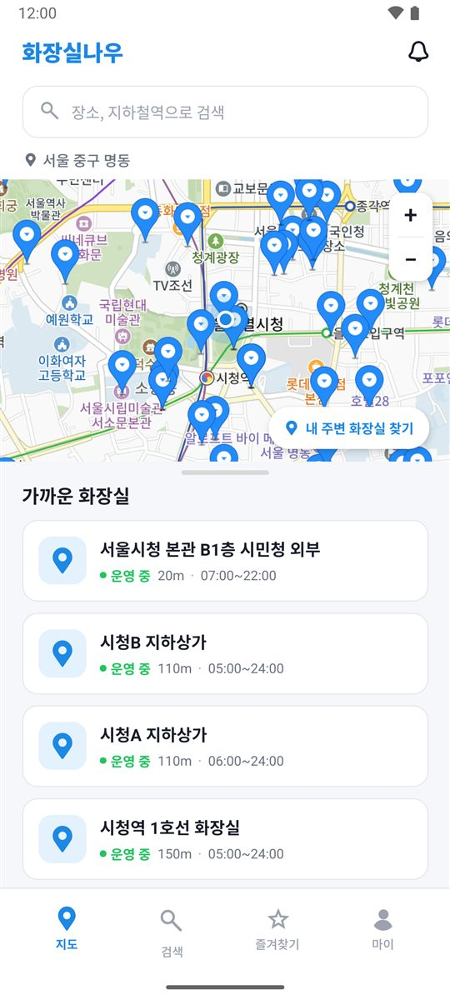
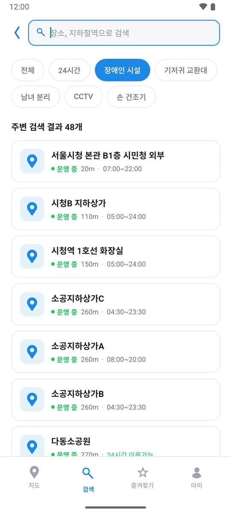
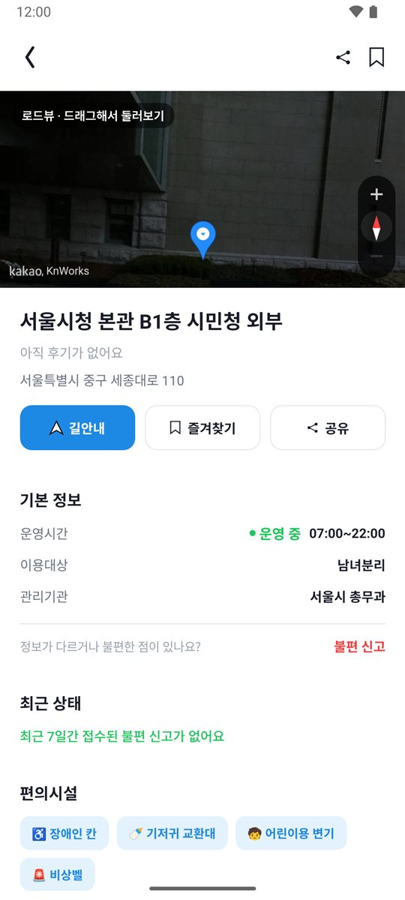

급할 때,
가장 가까운 화장실을
지금 바로
내 위치에서 가까운 공중화장실을 지도에서 찾고, 지금 열려 있는지와 장애인 칸·기저귀 교환대 같은 편의시설까지 한눈에 확인하세요.
- 전국 약 5만 곳
- 운영 중인지 바로 표시
- 로그인 없이 지도 이용

화장실 찾기, 아직도 감으로 하세요?
일반 지도 앱으로는 화장실 정보를 제대로 찾기 어렵습니다.
찾아가 봐야 알았어요
- "화장실"을 검색하면 상가와 식당만 잔뜩 나와요
- 도착해서야 문이 잠겨 있다는 걸 알게 돼요
- 장애인 칸이나 기저귀 교환대가 있는지 알 수 없어요
출발 전에 다 알 수 있어요
- 공공데이터 기반 공중화장실만 지도에 표시돼요
- 운영시간을 보고 지금 열려 있는지 알려줘요
- 편의시설로 걸러서 나에게 맞는 곳만 찾을 수 있어요
찾고, 확인하고, 바로 출발
필요한 정보만 담아 급할 때도 헤매지 않도록 만들었어요.
내 주변 화장실을
지도에서 한눈에
앱을 열면 현재 위치를 중심으로 가까운 공중화장실이 지도와 목록에 표시돼요. 거리순으로 정렬되고, 운영 중인지도 색으로 바로 보여요.
필요한 조건으로
골라서 찾기
장소나 지하철역 이름으로 검색하고, 필요한 편의시설로 걸러 보세요. 휠체어 이용자, 아이와 함께인 보호자 모두 맞는 곳을 빠르게 찾을 수 있어요.

로드뷰로 입구 확인,
길안내까지 한 번에
상세 화면에서 로드뷰로 주변 모습을 미리 보고, 운영시간·관리기관·편의시설을 확인한 뒤 길안내로 바로 출발하세요. 정보가 다르면 불편 신고로 알려 주세요.

4단계면 충분해요
앱 설치
아래 버튼으로 APK를 받아 설치해요.
위치 권한 허용
내 주변 화장실을 찾기 위해 위치를 사용해요.
가까운 곳 확인
지도와 목록에서 거리, 운영 여부를 확인해요.
길안내로 출발
상세 화면에서 길안내를 누르면 끝이에요.
지금 무료로 설치하세요
현재 Android 버전을 제공하고 있어요.
설치 방법
- 휴대폰에서 APK 다운로드 버튼을 눌러 파일을 받아요.
- 다운로드한 toiletnow.apk 파일을 열어요.
- "출처를 알 수 없는 앱" 안내가 나오면 이 출처 허용을 켜요.
- 설치를 누르면 끝이에요.
PC에서 보고 계신가요?
휴대폰 카메라로 QR 코드를 찍으면
바로 다운로드할 수 있어요.
자주 묻는 질문
정말 무료인가요?
네. 화장실나우의 모든 기능은 무료이고 광고도 없어요.
회원가입을 꼭 해야 하나요?
아니요. 지도와 검색, 상세 정보는 로그인 없이 쓸 수 있어요. 즐겨찾기, 방문 기록, 후기 작성처럼 내 정보를 저장하는 기능만 로그인이 필요해요. 이메일, 카카오, 구글 계정으로 가입할 수 있어요.
아이폰에서도 쓸 수 있나요?
지금은 Android만 지원해요.
화장실 정보는 어디서 가져오나요?
행정안전부와 각 지자체가 공개한 공공데이터 "공중화장실 정보"를 바탕으로 해요. 위치, 운영시간, 관리기관, 편의시설 정보를 함께 보여 드려요.
정보가 실제와 달라요.
화장실 상세 화면 아래의 불편 신고로 알려 주세요. 폐쇄, 운영시간 오류, 청결 불량, 시설 고장 등을 신고할 수 있고, 최근 신고 내용은 다른 이용자에게도 보여요.
"앱이 설치되지 않았습니다"라고 나와요.
이전에 설치한 화장실나우가 있다면 먼저 삭제한 뒤 다시 설치해 주세요. Android 7.0 이상에서 설치할 수 있어요.
설치할 때 "확인되지 않은 앱"이라고 나와요.
Play 스토어 밖에서 받은 앱이라 Play 프로텍트가 보여주는 안내예요. 무시하고 설치를 누르면 설치돼요.